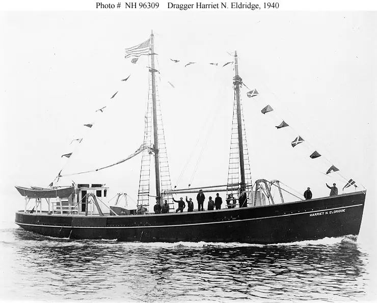
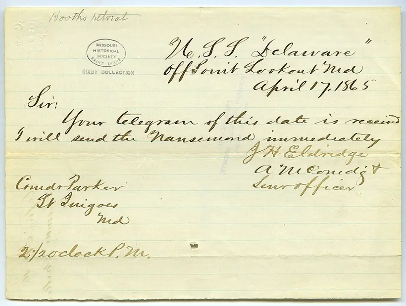
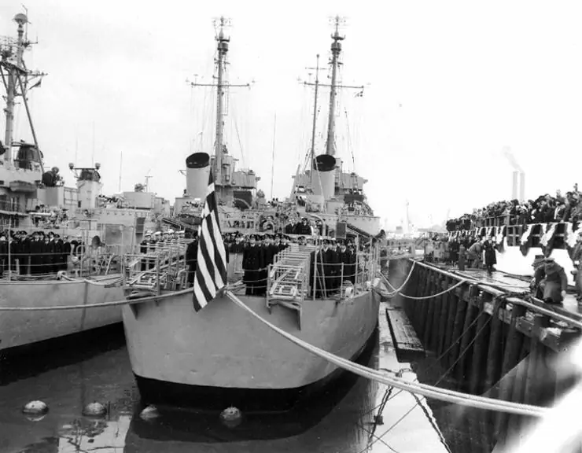

The story
The claim is that in October 1943 the US Navy made the destroyer escort USS Eldridge invisible at the Philadelphia Naval Shipyard, and that it teleported to Norfolk, Virginia and back, with crew members fused into the hull and others driven mad. It became a fixture of UFO and conspiracy literature through the 1979 film The Philadelphia Experiment and its sequels.
Maps, diagrams and images






The source
The story originates in letters sent in 1955 to the writer Morris Jessup by a man signing himself Carlos Miguel Allende — later identified as Carl Meredith Allen, who had served in the merchant marine, not the Navy. Jessup had published a book on UFOs; Allen wrote to him about invisibility experiments and the Eldridge. The letters are the sole primary source, and Allen's biography includes a court-martial and a documented history of fabrication.
There is no corroboration. The Navy has no record of such an experiment. The Eldridge's deck logs place the ship on convoy duty in the Atlantic and Mediterranean during the period in question, and the ship's war diary does not put it in Philadelphia. No crew member's testimony supports the account before 1955.
The plausible kernel
Two real programmes get pulled in. Degaussing — wrapping a steel ship in cables to cancel its magnetic signature against mines — was real, secret, and visible as a strange hum and glow to sailors who did not know what it was. And the Navy did work on radar invisibility, in the sense of stealth and countermeasures. Neither involves teleportation, and neither is classified today.
Documented: the Eldridge existed, and served on convoy duty in 1943–44.
Documented: degaussing was real, secret and physically strange to observe.
Not documented: any invisibility or teleportation experiment; no records, no logs, no witnesses before 1955.
The source: one correspondent with a record of invention, writing to a UFO author.
Why it persists: because a real secret programme provides the texture, and a film provided the plot.
Why it is in the archive
Because it is the template for a whole genre: a real classified programme, a single unreliable source, a film, and forty years of retelling in which the film becomes the evidence. The archive keeps it as the worked example of how a modern legend is assembled.
Open resources on this topic
- BookThe Philadelphia Experiment Project Invisibility (1993) - Charles Berlitz, William Moore — Charles Berlitz, William Moore · 1993 (Internet Archive, free to read)
- BookThe Philadelphia Experiment (1993) - Charles Berlitz, William Moore — Charles Berlitz, William Moore · 1993 (Internet Archive, free to read)
- BookCharles Berlitz, William Moore The Philadelphia Experiment 1993 (Internet Archive, free to read)
- PapersOpen-access articles: DOAJ · PubMed Central · Internet Archive Scholar
- BooksPublic-domain and borrowable copies: Open Library · Project Gutenberg · Google Books
More images
Cite this page
Momin, S. (2026). The Philadelphia Experiment. The Larger World Archive. https://drsamonline.github.io/LARGE_GLOBE/philadelphia-experiment.htmlMomin, Sohil. “The Philadelphia Experiment.” The Larger World Archive, 2026, https://drsamonline.github.io/LARGE_GLOBE/philadelphia-experiment.html.Momin, Sohil. “The Philadelphia Experiment.” The Larger World Archive, 2026. https://drsamonline.github.io/LARGE_GLOBE/philadelphia-experiment.html.@misc{the2026philadelphia,
author = {Momin, Sohil},
title = {The Philadelphia Experiment},
year = {2026},
howpublished = {The Larger World Archive},
url = {https://drsamonline.github.io/LARGE_GLOBE/philadelphia-experiment.html},
note = {Last reviewed 20 November 2026}
}Last reviewed 20 November 2026 · Corrections policy · this page is not peer reviewed
Sources for this page
- Wikipedia, “Philadelphia Experiment” — the claim, the source and the recordsen.wikipedia.org
- Wikipedia, “USS Eldridge” — the ship and its actual serviceen.wikipedia.org
- Wikipedia, “Degaussing” — the real, secret, strange-looking programmeen.wikipedia.org
- Wikipedia, “Morris Jessup” — the author who received the lettersen.wikipedia.org